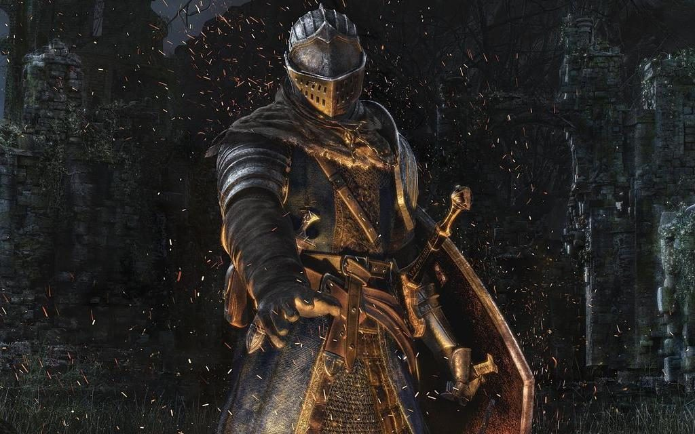
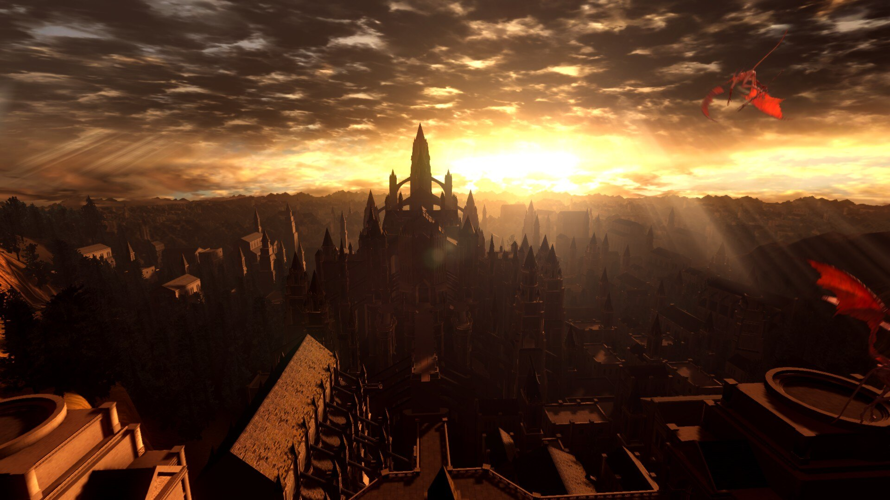

Welcome to my webpage! My name is Selton.
My favorite video game currently is Dark Souls 1. It is a very difficult game, but it is fair and rewarding. I recently achieved 100% completion in the game.
The game has a very interesting story that is told through the environment and items, which makes it feel more immersive.
The locations are fascinating and well designed. Each area has its own unique atmosphere and challenges. Below is an example of Anor Londo, one of the most iconic locations in the game.
Game Structure
- The first half of the game focuses on exploration and discovering the world. It includes hidden secrets, optional bosses, and frequent backtracking.
- The second half is more linear and story-focused, with more challenging enemies and complex bosses that require strategy.
If you wish to play Dark Souls 1, you can find it at the link below: